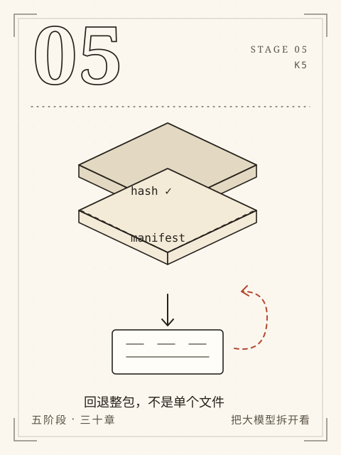

阶段 5 / K5
S5 独立交付
让别人能重做，才算交付。
在授权陌生材料上设计、实现、评测和交付，可由另一人独立复做。
最后一阶段把示范撤掉。图片、扫描件、陌生手册、无网络车间、另一个人的电脑——真实交付里没有“应该可以”。环境要锁，结果要能回查，服务要能说清楚自己是否就绪，坏了要能退回上一个可用版本。
四章从多模态边界走到陌生项目。毕业项目不提供题材，只提供题包、硬边界和评分依据。你要留下的不是一段漂亮的总结，而是一组另一个人可以照着复做的证据。
本阶段章节
- C27图片、扫描件与多模态边界
从一张有授权的图片出发，走通 OCR、文本层、区域回看和多模态边界。
- C28为新任务选择最小系统
为无网络车间里的手册问答选择最小系统，并写清不采用哪些组件。
- C29交给别人怎样才算交付
把“我电脑上能跑”变成别人能启动、能检查、能回退的交付包。
- C30不照抄案例的毕业项目
在陌生题材上独立走完需求、架构、实现、评测、排错与答辩。